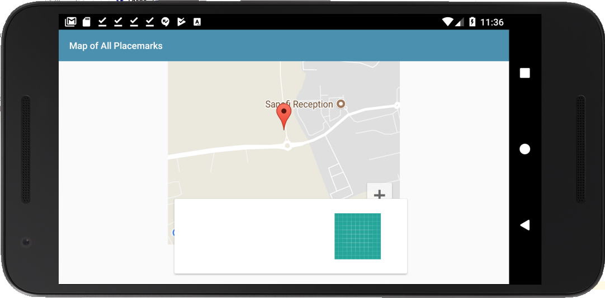

Create a new placemark and set its location. Save the placemark and move the location a very small distance. When you switch back to the PlacemarkActivity view, notice that you now have 2 placemarks.
Compare your version of the method below with the one shown here:
override fun onActivityResult(requestCode: Int, resultCode: Int, data: Intent?) {
super.onActivityResult(requestCode, resultCode, data)
when (requestCode) {
IMAGE_REQUEST -> {
if (data != null) {
placemark.image = data.getData().toString()
placemarkImage.setImageBitmap(readImage(this, resultCode, data))
chooseImage.setText(R.string.change_placemark_image)
}
}
LOCATION_REQUEST -> {
if (data != null) {
val location = data.extras.getParcelable<Location>("location")
map.clear()
placemark.lat = location.lat
placemark.lng = location.lng
placemark.zoom = location.zoom
configureMap()
}
}
}Can you see the single extra line? See if this fixes the problem.
Develop a landscape version of the PlacemarkMarkActivity:

Remember - the content of this activity is held in the content_placemark_maps.xml. This is included by activity_pacemark_maps.xml
This is the landscape layout:
<?xml version="1.0" encoding="utf-8"?>
<android.support.constraint.ConstraintLayout xmlns:android="http://schemas.android.com/apk/res/android"
xmlns:app="http://schemas.android.com/apk/res-auto"
xmlns:tools="http://schemas.android.com/tools"
android:layout_width="match_parent"
android:layout_height="match_parent"
app:layout_behavior="@string/appbar_scrolling_view_behavior"
tools:context="org.wit.placemark.activities.PlacemarkMapsActivity"
tools:showIn="@layout/activity_placemark_maps">
<android.support.v7.widget.CardView
android:id="@+id/cardView"
android:layout_width="224dp"
android:layout_height="293dp"
android:layout_marginBottom="92dp"
android:layout_marginEnd="16dp"
android:layout_marginTop="8dp"
app:layout_constraintBottom_toBottomOf="parent"
app:layout_constraintEnd_toEndOf="parent"
app:layout_constraintTop_toTopOf="parent"
app:layout_constraintVertical_bias="0.0">
<android.support.constraint.ConstraintLayout
android:layout_width="match_parent"
android:layout_height="match_parent">
<TextView
android:id="@+id/currentTitle"
android:layout_width="198dp"
android:layout_height="25dp"
android:layout_marginEnd="8dp"
android:layout_marginStart="8dp"
android:layout_marginTop="8dp"
app:layout_constraintEnd_toEndOf="parent"
app:layout_constraintStart_toStartOf="parent"
app:layout_constraintTop_toTopOf="parent" />
<TextView
android:id="@+id/currentDescription"
android:layout_width="202dp"
android:layout_height="25dp"
android:layout_marginEnd="8dp"
android:layout_marginStart="8dp"
android:layout_marginTop="8dp"
app:layout_constraintEnd_toEndOf="parent"
app:layout_constraintStart_toStartOf="parent"
app:layout_constraintTop_toBottomOf="@+id/currentTitle" />
<ImageView
android:id="@+id/imageView"
android:layout_width="204dp"
android:layout_height="195dp"
android:layout_marginBottom="16dp"
android:layout_marginEnd="44dp"
android:layout_marginStart="8dp"
android:layout_marginTop="8dp"
app:layout_constraintBottom_toBottomOf="parent"
app:layout_constraintEnd_toEndOf="parent"
app:layout_constraintHorizontal_bias="0.0"
app:layout_constraintStart_toStartOf="parent"
app:layout_constraintTop_toBottomOf="@+id/currentDescription"
app:srcCompat="@drawable/ic_launcher_background" />
</android.support.constraint.ConstraintLayout>
</android.support.v7.widget.CardView>
<com.google.android.gms.maps.MapView
android:id="@+id/mapView"
android:layout_width="334dp"
android:layout_height="289dp"
android:layout_marginBottom="8dp"
android:layout_marginEnd="8dp"
android:layout_marginStart="8dp"
android:layout_marginTop="8dp"
app:layout_constraintBottom_toBottomOf="parent"
app:layout_constraintEnd_toStartOf="@+id/cardView"
app:layout_constraintStart_toStartOf="parent"
app:layout_constraintTop_toTopOf="parent" />
</android.support.constraint.ConstraintLayout>Currently we do not have any way retrieving a placemark by its ID. Having this ability is a useful utility method for a variety of scenarios.
We can start by introducing this into the PlacemarkStore and PlacemarkMemStore
...
suspend fun findById(id:Long) : PlacemarkModel?
......
suspend override fun findById(id:Long) : PlacemarkModel? {
val foundPlacemark: PlacemarkModel? = placemarks.find { p -> p.id == id }
return foundPlacemark
}
...This implements the facility only if we are using in-memory store. Now implement the same feature when we are using the database:
...
override suspend fun findById(id: Long): PlacemarkModel? {
val deferredPlacemark = bg {
dao.findById(id)
}
val placemark = deferredPlacemark.await()
return placemark
}
...The above will need this method in the Dao class:
...
@Query("select * from PlacemarkModel where id = :arg0")
fun findById(id: Long): PlacemarkModel
...Currently, in PlacemarkMapsActivity we have this method already implemented:
fun configureMap() {
map.uiSettings.setZoomControlsEnabled(true)
map.setOnMarkerClickListener(this)
async(UI) {
app.placemarks.findAll().forEach {
val loc = LatLng(it.lat, it.lng)
val options = MarkerOptions().title(it.title).position(loc)
map.addMarker(options).tag = it.id
map.moveCamera(CameraUpdateFactory.newLatLngZoom(loc, it.zoom))
}
}
}There is one very significant line in here:
map.addMarker(options).tag = it.idThis is doing two things:
This means the each placemark will have the ID (from the datastore) of the placemark is is representing.
We can now use this tag to update the card containing details of the selected placemark. This is the current version of the onMarkerCLick event hander:
...
override fun onMarkerClick(marker: Marker): Boolean {
currentTitle.text = marker.title
return false
}
...Replace it with the following:
...
override fun onMarkerClick(marker: Marker): Boolean {
async(UI) {
val tag = marker.tag as Long
val placemark = app.placemarks.findById(tag)
currentTitle.text = placemark!!.title
currentDescription.text = placemark!!.description
imageView.setImageBitmap(readImageFromPath(this@PlacemarkMapsActivity, placemark.image))
}
return false
}
...Look carefully at method - when a user clicks on a placemark in the map, we do the following:
Try this out now - and make sure landmark and portrait PlacemarkMapsActivity now displays the placemark details on the panel as each marker is selected.
We would like to support retrieving the current location, and using this when a placemark is being created. We will do this by adding a new button to the PlacemarkActivity - a here button. This will retrieve the current location and put the placemark in that position on the map.
First - add a new button to the PlacemarkActivity
This might be the button characteristics:
<Button
android:id="@+id/btnHere"
android:layout_width="147dp"
android:layout_height="wrap_content"
android:layout_marginBottom="8dp"
android:layout_marginEnd="8dp"
android:layout_marginStart="8dp"
android:layout_marginTop="8dp"
android:text="Here"
app:layout_constraintBottom_toTopOf="@+id/mapView"
app:layout_constraintEnd_toEndOf="parent"
app:layout_constraintStart_toEndOf="@+id/placemarkLocation"
app:layout_constraintTop_toBottomOf="@+id/placemarkImage" />By Default we will disable this button - so in onCreate we set the button as follows:
...
override fun onCreate(savedInstanceState: Bundle?) {
...
btnHere.isEnabled = false
...
}When you run the app now - make sure the button is disabled.
We need new location provider libraries - so include this new entry in build.gradle
implementation "com.google.android.gms:play-services-location:11.6.2"Place it just below the google maps entry
Introduce this new class into the helpers package:
package org.wit.placemark.helpers
import android.Manifest
import android.app.Activity
import android.content.pm.PackageManager
import android.support.v4.app.ActivityCompat
import android.util.Log
val REQUEST_PERMISSIONS_REQUEST_CODE = 34
fun checkLocationPermissions(activity: Activity): Boolean {
var success = false;
if (ActivityCompat.checkSelfPermission(activity, Manifest.permission.ACCESS_FINE_LOCATION) == PackageManager.PERMISSION_GRANTED) {
success = true;
} else {
ActivityCompat.requestPermissions(activity, arrayOf(Manifest.permission.ACCESS_FINE_LOCATION), REQUEST_PERMISSIONS_REQUEST_CODE)
}
return success
}
fun isPermissionGranted(code: Int, grantResults: IntArray): Boolean {
var permissionGranted = false;
if (code == REQUEST_PERMISSIONS_REQUEST_CODE) {
when {
grantResults.isEmpty() -> Log.i("Location", "User interaction was cancelled.")
(grantResults[0] == PackageManager.PERMISSION_GRANTED) -> {
permissionGranted = true
Log.i("Location", "Permission Granted.")
}
else -> Log.i("Location", "Permission Denied.")
}
}
return permissionGranted
}These are utility methods - which are needed if we wish to access the location services on the phone.
In PlacemarkActivity - introduce these two now methods:
override fun onStart() {
super.onStart()
if (checkLocationPermissions(this)) {
btnHere.isEnabled = true
}
}
@SuppressLint("MissingPermission")
override fun onRequestPermissionsResult(requestCode: Int, permissions: Array<String>, grantResults: IntArray) {
if (isPermissionGranted(requestCode, grantResults)) {
btnHere.isEnabled = true
}
}This will specifically trigger a location permission dialog - asking the user to permit location services to be accessed.
Run the app now - and see if, when you try to create a new activity, the location services dialog appears.
Grant permissions by selecting 'allow' - the Here button should be activated.
Kill the app - and run it again. Does the permission screen appear? It doesn't this time - because the permission is persisted.
Try deleting the app completely - and then run it again. This time the the permission should appear again. Get used to this cycle, as it is important to understand the control flow here.
Include this new field in the PlacemarkActivity class:
private lateinit var locationService: FusedLocationProviderClientand in onCreate - initialise it:
override fun onCreate(savedInstanceState: Bundle?) {
...
locationService = LocationServices.getFusedLocationProviderClient(this)
...
}Introduce this new method:
@SuppressLint("MissingPermission")
fun setCurrentLocation() {
locationService.lastLocation.addOnSuccessListener {
defaultLocation.lat = it.latitude
defaultLocation.lng = it.longitude
placemark.lat = it.latitude
placemark.lng = it.longitude
configureMap()
}
}This will use the location provider to retrieve the current location - and set the map marker to this position. It is using the location provider - and retrieving the last known location.
Finally - we can call this method of the here button is pressed:
btnHere.setOnClickListener {
setCurrentLocation()
}Try this now. Note that you have location options in the emulator:
It is available via the menu bar on the right.
You should be able to set a location in the emulator - and when you press 'here' it should send you to that location on the app.